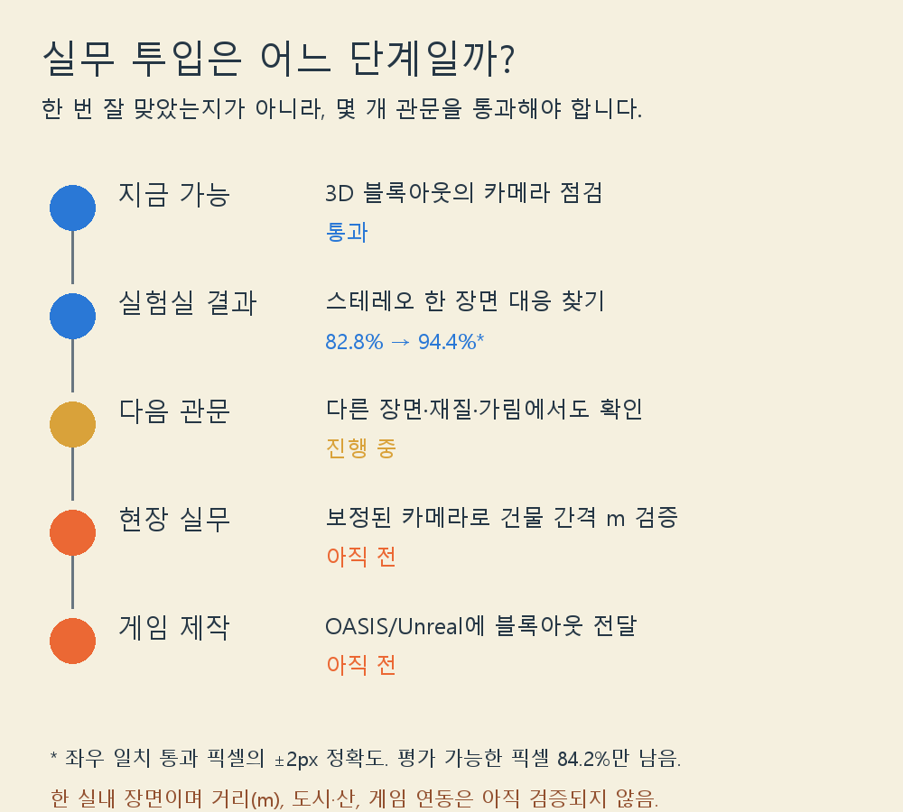

실무 투입은 어느 단계일까?
현재 할 수 있는 일과 아직 통과하지 못한 관문을 나눠 보았습니다. 기간을 임의로 약속하기보다 측정 기준을 씁니다.

이번 추가 실험
좌우 사진에서 각각 찾은 시차가 서로 맞는지 ±1px 기준으로 걸렀습니다. 전체 평가 대상 275,003픽셀 중 231,537개(84.2%)가 통과했습니다. 통과한 곳에서는 ±2px 이내 비율 94.4%였고, 미리 보기 전 전체에서는82.8%였습니다. 점수는 좋아 보이지만 가려짐·무늬 반복 픽셀 15.8%를 버린 대가가 있으므로 커버리지도 함께 봐야 합니다.
단일 픽셀 비교19.1%, 7×7 주변 비교82.8%, 그 뒤 좌우 확인 통과점94.4%. 전부 한 실내 Aloe 이미지 쌍의 반해상도 시차 픽셀 평가입니다. 독립적인 도시 검증 점수가 아닙니다.
언제 쓸 수 있나
카메라/크기 점검은 현재 블록아웃 작업 보조로 사용할 수 있습니다. 사진에서 건물 사이 거리나 산의 실제 크기를 재는 기능은 아직 실무용으로 부를 수 없습니다. 그 전에는 보정된 실제 카메라 baseline과 초점거리, 미터 정답이 있는 서로 다른 장소 몇 곳에서 오차와 실패율을 재고, 가림·반복무늬·평탄한 땅을 따로 시험해야 합니다. 이후 한 장소를 통째로 빼둔 검증에서 프로젝트 허용 오차를 통과하면 해당 유형에 한해 현장 보조로 승격합니다. 현재 날짜로 완료 시점을 약속할 증거는 없습니다.
결과 JSON·NumPy 예측과 원본 출처는 로컬 연구 기록에 있습니다. 원본 이미지는 공개하지 않고 집계 그래프만 게시합니다.
첫 실험 상세 · OpenCV 자료 출처